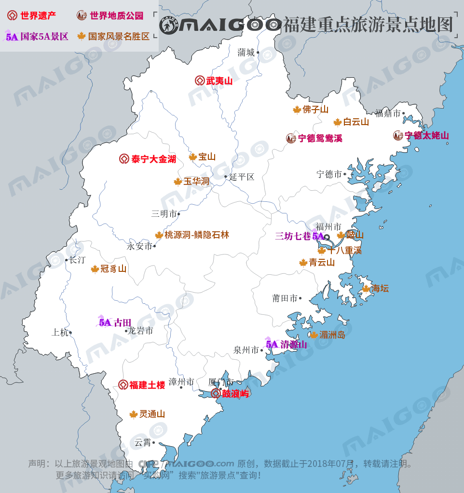

| | | | | |
| - | - | - | - | - |
|<b>别名</b>|闽、八闽、八闽大地、海西||<b>著名景点</b>|鼓浪屿、武夷山、泰宁、土楼、清源山、白水洋、太姥山、三坊七巷|
|<b>行政区类别</b>|省||<b>机 场</b>|福州长乐国际机场、厦门高崎国际机场、泉州晋江国际机场等|
|<b>所属地区</b>|中国华东地区||<b>火车站</b>|福州站、厦门北站、泉州站、漳州站、福州南站等|
|<b>下辖地区</b>|9地级市、1综合实验区、29市辖区、10市辖开发区、12县级市、44县||<b>车牌代码</b>|闽A-闽K|
|<b>电话区号</b>|0591-0599||<b>GDP</b>|32298.28亿元（2017年）|
|<b>邮政区码</b>|350000-365000||<b>人均GDP</b>|82582元（2017年）|
|<b>地理位置</b>|中国东南||<b>最长山脉</b>|武夷山脉|
|<b>面 积</b>|12.4万平方千米||<b>最高山峰</b>|黄岗山（2157.8米）|
|<b>人 口</b>|3911万（2017年末全省常住人口）||<b>最长河流</b>|闽江|
|<b>方 言</b>|闽东语、闽南语、莆仙话、闽中语、客家语等||<b>最大岛屿</b>|海坛岛|
|<b>气候条件</b>|亚热带季风气候||<b>知名高校</b>|厦门大学、福州大学等|
|-|-||<b>历史名人</b>|林则徐、郑成功、朱熹、林语堂等|
|-|-||<b>省委书记</b>|于伟国|
|-|-||<b>省 长</b>|唐登杰|
|-|-||<b>主要河流</b>|闽江、九龙江、晋江、汀江|
|-|-||<b>民间信仰</b>|妈祖、关帝、开闽王、开漳圣王等|
| <b>福建生活文化</b> | <b>福建特色文化</b> | <b>福建曲艺文化</b> | <b>福建建筑文化</b> | <b>福建宗教文化</b> |
| - | - | - | - | - |
| <a href="javascript:;" onclick="live(this);">习俗/民俗</a> | <a href="javascript:;" onclick="feature(this);">福建妈祖文化</a> | <a href="javascript:;" onclick="art(this);">传统曲艺民俗文化</a> | <a href="javascript:;" onclick="building(this);">福建土楼</a> | - |
| <a href="javascript:;" onclick="live(this);">方言文化</a> | <a href="javascript:;" onclick="feature(this);">船政文化</a> | - | <a href="javascript:;" onclick="building(this);">福建三坊七街</a> | - |
| <a href="javascript:;" onclick="live(this);">节日文化</a> | - | - | <a href="javascript:;" onclick="building(this);">福建庙宇/庙会</a> | - |
| <a href="javascript:;" onclick="live(this);">嫁娶文化</a> | - | - |-|-|
| <a href="javascript:;" onclick="live(this);">饮食文化</a> | - | -|-|-|
| <a href="javascript:;" onclick="live(this);">福建禁忌</a> | - |-| -|-|
## <i class="fa fa-file-text-o"></i>&nbsp;目录（Table of Contents）
+ [I. 总路线图（参考"广东"）](guangdong.html)
+ [II. 景点](#two)
+ [III. 路线规划（参考"广东"）](guangdong.html)
<h2 id="two"><i class="fa fa-star-o"></i>&nbsp;景点</h2>
